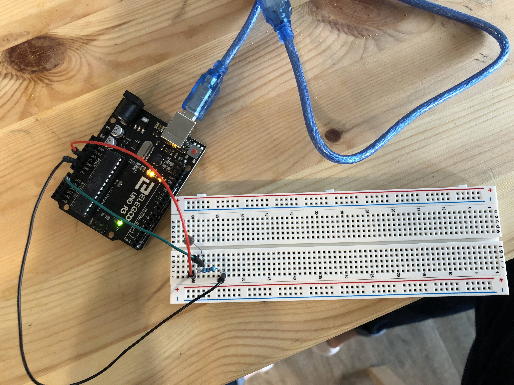
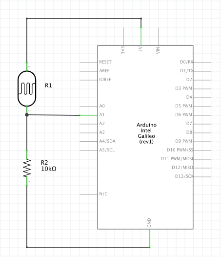

Yuki Asakura's Assignment 6!

Circuit Operation. A bunch of circles with different colors are drawn based on the amount of light sensed by the photoresistor.

Circuit board
var serial; // variable to hold an instance of the serialport library
var portName = '/dev/cu.usbmodem14101' //rename to the name of your port
var datain; //some data coming in over serial!
var xPos = 0;
function setup() {
serial = new p5.SerialPort(); // make a new instance of the serialport library
serial.on('list', printList); // set a callback function for the serialport list event
serial.on('connected', serverConnected); // callback for connecting to the server
serial.on('open', portOpen); // callback for the port opening
serial.on('data', serialEvent); // callback for when new data arrives
serial.on('error', serialError); // callback for errors
serial.on('close', portClose); // callback for the port closing
serial.list(); // list the serial ports
serial.open(portName); // open a serial port
createCanvas(1200, 800); // create a canvas of size 1200x800
background(0x08, 0x16, 0x40); // change background color
}
// get the list of ports:
function printList(portList) {
// portList is an array of serial port names
for (var i = 0; i < portList.length; i++) {
// Display the list the console:
print(i + " " + portList[i]);
}
}
function serverConnected() {
print('connected to server.');
}
function portOpen() {
print('the serial port opened.')
}
function serialError(err) {
print('Something went wrong with the serial port. ' + err);
}
function portClose() {
print('The serial port closed.');
}
function serialEvent() {
if (serial.available()) {
datain = Number(serial.readLine());
//console.log(datain);
}
}
function graphData(newData) {
circle(xPos, newData, 20); // draw a circle at position
var hexCode = map(newData, 250, 800, 0, 255); // map newData to variable hexCode
let objColor = color(hexCode,hexCode-20,hexCode-80); // change circle color
fill(objColor); // fill circle color with color above
// at the edge of the screen, go back to the beginning:
if (xPos >= width) {
xPos = 0;
// clear the screen by resetting the background:
background(0x08, 0x16, 0x40);
} else {
// increment the horizontal position for the next reading:
xPos++;
}
}
function draw() {
graphData(datain); // run function graphData with photoresistor values
}
Code Snippet

Schematic + Calculation
Photoresistor values: 250 < x < 800
Hex Code value: 0 < y < 255
// hexCode returns a value
var hexCode = map(newData, 250, 800, 0, 255);
In my Javascript code, there is a section where I need to map the light from the photoresistor to a hex code so that the circle's color changes. I did this by knowing that the photoresistor values are approximately from 250 ~ 800 and the hex code values are from 0 ~ 255. Using the map function, variable hexCode gives me a mapped value that I'm able to use change the color of the circle.